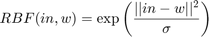
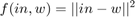
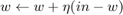
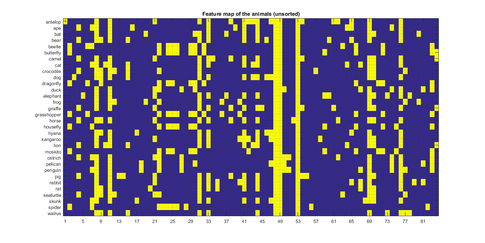
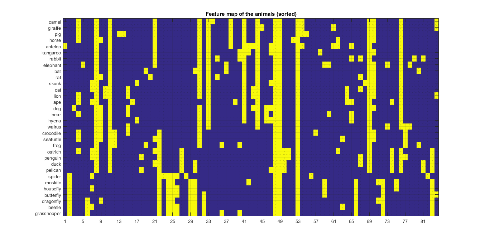

Topological Ordering of Animal Species
Contents
set(0, 'DefaultFigurePosition', get(0,'screensize')); clc; clear; close all;
Introduction
Units If we were to use RBF units, we would have for every unit an activation:

and the winner unit would be the one that has the highest activation value.
Here we use simpler units, based on distance only:

and the winner unit is the one that has the lowest activation value.
Neighborood We are using a one dimensional topology, i.e. the neurons are arranged sequentially one after the other and given a winner, we will update all the units that are closer than a certain number of 'hops' to it.

% TODO add stuff about "the neuron that wins keeps winning"
Clustering with 100 units
Setup
The weights matrix contains a 84D vector for every one of the 100 units, each weight is a row of the matrix.
animals; num_of_epochs = 20; eta = 0.2; [num_of_animals, num_of_features] = size(props); num_of_units = 100; weights = rand(num_of_units, num_of_features);
Training
for epoch = 1:num_of_epochs neighborhood_size = (num_of_epochs - epoch + 1)*2; for animal_idx = 1:num_of_animals % Find the winner p = props(animal_idx, :); diff = repmat(p, num_of_units, 1) - weights; dist = sum(diff.^2, 2); [~, winning_unit] = min(dist); % Update mask update_function = zeros(num_of_units, num_of_features); neighboor_min = max(1, winning_unit - neighborhood_size); neighboor_max = min(num_of_units, winning_unit + neighborhood_size); update_function(neighboor_min : neighboor_max, :) = 1; % Update weights weights = weights + update_function .* (eta * diff); end end
Result
We see how many of the units are unused.
clustering = zeros(32, 1); for animal_idx = 1:num_of_animals p = props(animal_idx, :); diff = repmat(p, num_of_units, 1) - weights; dist = sum(diff.^2, 2); [~, winning_unit] = min(dist); clustering(animal_idx) = winning_unit; end [~, order] = sort(clustering); table(snames(order)', clustering(order),'VariableNames',{'Animal', 'Cluster'})
ans =
Animal Cluster
_____________ _______
'camel' 1
'giraffe' 1
'pig' 1
'horse' 4
'antelop' 7
'kangaroo' 9
'rabbit' 11
'elephant' 14
'bat' 17
'rat' 20
'skunk' 23
'cat' 27
'lion' 27
'ape' 30
'dog' 35
'bear' 38
'hyena' 39
'walrus' 46
'crocodile' 53
'seaturtle' 54
'frog' 59
'ostrich' 64
'penguin' 67
'duck' 73
'pelican' 73
'spider' 80
'moskito' 87
'housefly' 90
'butterfly' 93
'dragonfly' 97
'beetle' 100
'grasshopper' 100
Plotting
figure; imagesc(props(:,:)); title('Feature map of the animals (unsorted)'); grid on; grid minor; set(gca,'ytick',1:32); set(gca,'yticklabels',snames); set(gca,'xtick',1:4:84); figure; imagesc(props(order,:)); title('Feature map of the animals (sorted)'); grid on; grid minor; set(gca,'ytick',1:32); set(gca,'yticklabels',snames(order)); set(gca,'xtick',1:4:84); 
Clustering with 15 units
We get nicer results with 15 units (less units than inputs)
animals; num_of_epochs = 20; eta = 0.2; [num_of_animals, num_of_features] = size(props); num_of_units = 15; weights = rand(num_of_units, num_of_features); for epoch = 1:num_of_epochs neighborhood_size = (num_of_epochs - epoch + 1)*2; for animal_idx = 1:num_of_animals p = props(animal_idx, :); diff = repmat(p, num_of_units, 1) - weights; dist = sum(diff.^2, 2); [~, winning_unit] = min(dist); % Update function update_function = zeros(num_of_units, num_of_features); neighboor_min = max(1, winning_unit - neighborhood_size); neighboor_max = min(num_of_units, winning_unit + neighborhood_size); update_function(neighboor_min : neighboor_max, :) = 1; % Update weights weights = weights + update_function .* (eta * diff); end end clustering = zeros(32, 1); for animal_idx = 1:num_of_animals p = props(animal_idx, :); diff = repmat(p, num_of_units, 1) - weights; dist = sum(diff.^2, 2); [~, winning_unit] = min(dist); clustering(animal_idx) = winning_unit; end [~, order] = sort(clustering); table(snames(order)', clustering(order),'VariableNames',{'Animal', 'Cluster'})
ans =
Animal Cluster
_____________ _______
'antelop' 1
'camel' 1
'elephant' 1
'giraffe' 1
'horse' 1
'kangaroo' 1
'pig' 1
'rabbit' 2
'rat' 2
'bat' 3
'skunk' 3
'bear' 5
'cat' 5
'dog' 5
'hyena' 5
'lion' 5
'walrus' 6
'ape' 7
'crocodile' 8
'frog' 8
'seaturtle' 8
'duck' 11
'ostrich' 11
'pelican' 11
'penguin' 11
'spider' 14
'beetle' 15
'butterfly' 15
'dragonfly' 15
'grasshopper' 15
'housefly' 15
'moskito' 15
clc; clear; close all;